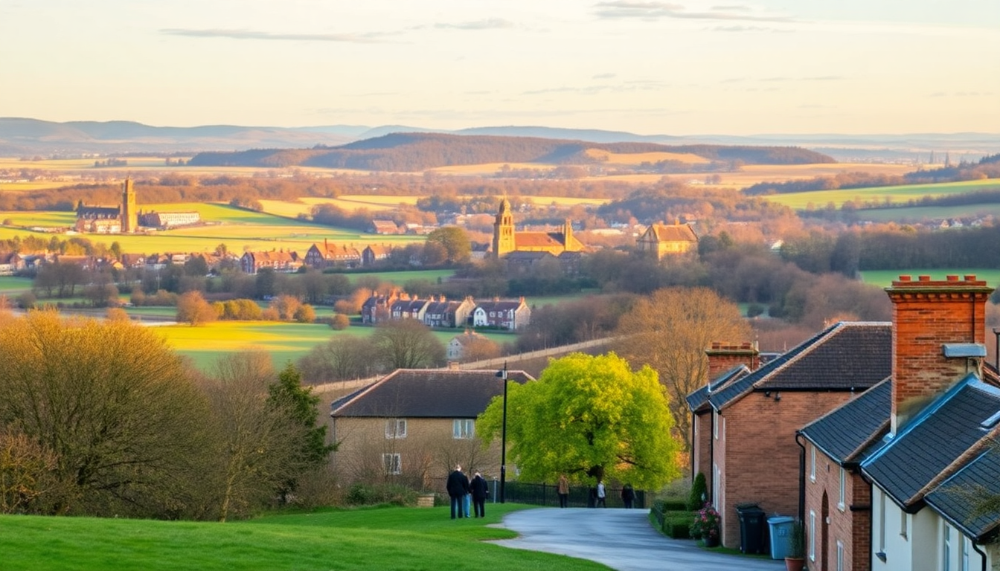

London Day Trips: Windsor, Stonehenge & Oxford Guide

I’ve done the London day-trip shuffle more times than I care to count, and the Windsor–Stonehenge–Oxford triangle is the most popular for a reason. But cramming all three into a single day is a mistake — you’ll spend more time on the coach than actually seeing anything. Here’s what I learned after testing the combo, plus the smarter way to tackle each one.
Should you visit Windsor, Stonehenge, and Oxford in one day?
Short answer: no. I tried the “grand tour” coach trip that promises all three in 10 hours. We got 45 minutes at Stonehenge (enough for a quick circle and a selfie), 90 minutes in Windsor (which meant skipping the castle interior), and two hours in Oxford (basically a sprint from the Bodleian to a pub and back). If you want depth, pick two — or stretch it over two days.
What you actually see on a combo tour:
- Stonehenge — timed entry slot, often early morning to avoid crowds, but strictly no time for the exhibition or the surrounding burial mounds.
- Windsor Castle — exterior only unless you queue early; the State Apartments and St George’s Chapel need at least 90 minutes alone.
- Oxford — a walking tour that hits Radcliffe Camera, Bodleian Library, and Christ Church meadow, but you’ll miss the colleges’ interiors.
My advice: pick Windsor + Oxford for a full day, or Stonehenge + Bath. Save the triple-header for a second trip.
How do you get to Windsor Castle from London without a tour?
The train is the easiest. From London Paddington, take a Great Western Railway service to Windsor & Eton Central (change at Slough) — total time about 40 minutes. Alternatively, South Western Railway from London Waterloo to Windsor & Eton Riverside runs direct in about 50 minutes. I prefer the Paddington route because the station drops you right at the castle gates.
Windsor highlights I’d do again:
- St George’s Chapel — the fan-vaulted ceiling and ten monarchs’ tombs (including Henry VIII) are worth the entry fee alone. Check the website before you go; it closes for services on Sundays.
- State Apartments — Queen Mary’s Dolls’ House is oddly fascinating, but the real draw is the Grand Reception Room’s ceiling.
- The Long Walk — the 2.6-mile tree-lined avenue behind the castle. Great for a post-visit stroll if the weather holds.
- The Two Brewers pub — a proper local spot on Park Street. Their fish and chips beat any tourist-trap cafe near the castle gates.
Entry to Windsor Castle costs around £30 (book ahead online to skip the ticket queue). Audio guide is included — take it; the commentary on the castle’s history is better than any guidebook.
Is Stonehenge worth the trip from London?
Honestly, it depends on your expectations. If you’re expecting a mystical, solitary experience, you’ll be disappointed — the stones sit next to a busy road, and you walk on a designated path roped off about 30 feet away. But if you’re into ancient history and the engineering feat of moving 40-ton bluestones from Wales, it’s genuinely impressive.
How to make Stonehenge work as a day trip:
- Take the train to Salisbury (about 90 minutes from London Waterloo), then catch the Stonehenge Tour bus from the station. It runs every 30 minutes and includes entry.
- Go at opening time (9:30 AM) or the last slot (around 4 PM in winter). I did the 4 PM entry in November — nearly empty, with low sun making the stones glow.
- Skip the audio guide — the exhibition hall already explains the Neolithic context well enough. Instead, walk the full perimeter path (about 1 mile) to see the stones from different angles.
- Combine with Salisbury — the cathedral has one of four surviving Magna Carta copies and a 123-meter spire. Lunch at The Chapter House cafe inside the cathedral close is solid and affordable.
I’d pair Stonehenge with Salisbury, not Windsor or Oxford. That gives you a relaxed day with two genuine highlights.
What’s the best way to visit Oxford from London?
Oxford is the easiest day trip of the three. Trains from London Paddington to Oxford station run every 15–20 minutes and take about an hour. From Marylebone, Chiltern Railways is slightly slower (70 minutes) but often cheaper if you book advance singles.
Oxford itinerary I’ve refined over three visits:
- Start at the Ashmolean Museum (free) — the rooftop cafe has a decent view of the dreaming spires, and the collection spans from Egyptian mummies to Pre-Raphaelite paintings.
- Walk through Radcliffe Square — the Radcliffe Camera is the iconic round library. You can’t go inside unless you’re a student, but the exterior is the photo op.
- Tour a college — Christ Church is the most famous (Harry Potter dining hall), but it’s crowded and costs £18. I prefer Magdalen College (about £8) — quieter, with a deer park and riverside walks.
- Lunch at the Covered Market — Pieminister does excellent pies (the “Moo” with steak and ale is my go-to), or grab a sandwich from Ben’s Cookies for later.
- Punting on the Cherwell — £25–30 per hour for a punt. If you’ve never done it, hire a chauffeured punt (about £50 for 30 minutes) unless you want to entertain onlookers with your pole-wobbling.
Oxford is walkable, but wear comfortable shoes. The cobblestones and gravel paths wrecked a pair of sneakers on my first trip.
When is the best time to visit each destination?
Windsor Castle — weekdays in shoulder season (April–May or September–October). The castle is a working royal residence, so it closes during state visits and royal events. Check the official schedule before booking.
Stonehenge — winter afternoons (November–February) for the lowest crowds and best light. Summer solstice is chaotic and requires special access tickets. I’d avoid July–August entirely.
Oxford — term time (October–December, January–March, April–June) is lively but crowded. July–August is quieter because students are gone, but some college dining halls close. Early morning on a Saturday is my sweet spot.
Where should you eat near these attractions?
I’ve had my share of overpriced sandwiches and lukewarm tea near tourist landmarks. Here’s what actually worked:
- Windsor — The Duchess of Cambridge (pub on Thames Street) for a proper Sunday roast. Book ahead on weekends.
- Stonehenge — The on-site café is mediocre. Instead, grab a pasty from Cornish Bakery in Salisbury before you head out.
- Oxford — The Turf Tavern (hidden behind a wall near the Bodleian) for a pint and a ploughman’s lunch. It’s a student haunt, so prices are reasonable.
FAQ
How much time do you need at Windsor Castle? At least 2.5 hours if you want to see the State Apartments, St George’s Chapel, and the changing of the guard (which happens at 11 AM on select days). Add another hour if you plan to walk the Long Walk or visit the town.
Can you visit Stonehenge without a car? Yes. The Stonehenge Tour bus from Salisbury station is the simplest option — it includes entry and runs a loop every 30 minutes. Alternatively, direct coach tours from London cost £50–80 and include transport and entry, but you’ll be on a fixed schedule.
Is Oxford expensive for a day trip? It can be. Train tickets from London start at £15–20 each way if you book advance, but peak-time returns hit £40+. Colleges charge £8–18 entry each. Budget about £60–80 per person including transport, one meal, and one college entry. Punting adds another £25–30.
Conclusion
- Pick two destinations per day, not three. Windsor + Oxford or Stonehenge + Salisbury are the best combos.
- Book trains in advance for the best prices — Great Western Railway and Chiltern Railways both offer advance singles.
- Skip the guided combo tours unless you’re okay with surface-level visits and tight timelines.
- Eat at pubs or markets near each attraction, not at the on-site cafes.
- Go early or late in the day to dodge crowds, especially at Stonehenge and Windsor Castle.